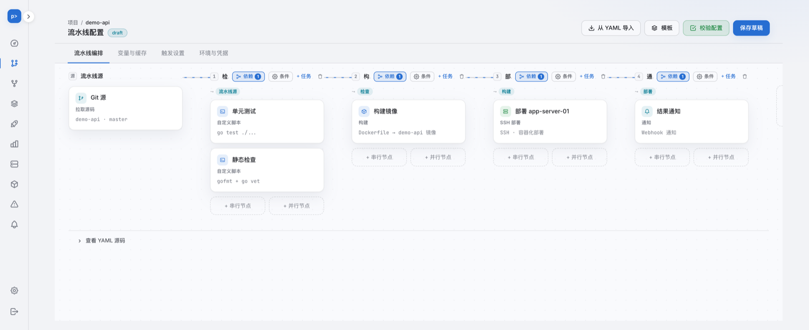

可视化流水线
在画布上配置任务与依赖，或将流水线写进仓库。失败时定位具体节点并查看日志。
查看 YAML 示例用可视化流水线组织构建、测试和部署。在同一个界面查看节点日志、制品与发布结果。
Linux / macOS / Windows 单二进制及容器镜像

在画布上配置任务与依赖，或将流水线写进仓库。失败时定位具体节点并查看日志。
查看 YAML 示例通过 SSH 或 Kubernetes 发布，在发布后查看部署结果，并通过护航报告追踪相关变更。
查看部署方式在自己的实例管理流水线和凭据。需要多人协作时，可以启用团队模式并按角色授权。
查看实例配置安装实例、连接仓库、运行脚本，再到节点里查看输出。